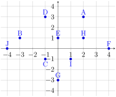

These activities will help you review some graphing skills that you will need in many future lessons. You will also review finding average speed, which you will build on in this lesson.
Prep Activity2.1.1.
There are many types of graphs in math! In previous courses, you may have seen:
Bar charts
Pie charts
Scatterplots
Graphs of functions in the \(xy-\)plane
and more. When we talk about graphs in this class, we will always mean graphs of points or curves in the \(xy-\)plane (unless we specifically say otherwise). We will use these graphs in almost every lesson, so it is essential that you know how to read and create them.
(a)
The graph below shows several points in the \(xy-\)plane (aka coordinate plane). The horizontal axis goes from left to right and is the boldest left-to-right line if the graph includes more than one such line. In previous classes, you may have called this the \(x-\)axis. The vertical axis goes up and down and is the boldst up-and-down line if the graph includes more than one such line. In previous classes, you may have called this the \(y-\)axis. The axes are two number lines that create a grid on the coordinate plane. (Note: Axis is singular and axes is plural.)

Point A is at (2,3). Point B is at (-3,1). Point C is at (-1,-1). Point D is at (-1,3). Point E is at (0,1). Point F is at (4,0). Point G is at (0,-3). Point H is at (2,1). Point I is at (-1,1). Point J is at (-4,0).
Figure2.1.1.Example of points in the coordinate plane.
The point at which the two axes intersect is called the origin. This point represents 0 for both axes, and is given the coordinates (aka ordered pair) \((0,0)\text{.}\) Each point in the plane has coordinates (horizontal value, vertical value). For example, the point \(A\) has the coordinates \((2,3)\text{,}\) the point \(B\) has the coordinates \((-3,1)\text{,}\) and the point \(J\) has coordinates \((-4,0)\text{.}\)
Write the coordinates of the rest of the points in this graph.
Prep Activity2.1.2.
We will often be interested in graphs of lines and curves, rather than graphs of invidual points. Here is a graph that we will see again soon.
Parabola facing down. Increases from \((0,0)\) to about \((8,27)\text{,}\) then decreases to \((10,25)\text{.}\) The horizontal axis is labeled seconds and the vertical axis is labeled meters.
Figure2.1.2.Team A
This graph shows Team A’s location from the starting line at every time during a race. From the axis labels, we can tell that the vertical axis tells us their location in meters and the horizontal axis tells us the time in seconds since the race began. Common types of questions to ask about this sort of graph include:
Where was Team A 10 sec into the race?
Solution: Since seconds are on the horizontal axis, we need to find the coordinates of the point on the curve whose horizontal coordinate is 10. To do this, we go to 10 on the horizontal axis and look directly above and below until we find the curve. On this graph, we find point \(A\text{.}\) Now that we’ve found the point we want, our answer is the vertical coordinate of that point. In this case, our answer is 25 m.
How long did it take Team A to go 10 m?
Solution: Since distance in meters is on the vertical axis, we need to find the coordinates of the point on the curve whose vertical coordinate is 10. To do this, we go to 10 on the vertical axis and look directly to the right and left until we find the curve. On this graph, we find point \(B\text{.}\) Now that we’ve found the point we want, our answer is the horizontal coordinate of that point. In this case, we see that our point is between 1 and 2 on the horizontal axis. It’s a little closer to 2 than to 1, we estimate that our answer is 1.6 sec. When we estimate, there’s a range of acceptable answers. In this case, any number between 1.5 and 1.9 is a reasonable estimate.
(a)
Where was Team A after 5 seconds?
(b)
How long did it take Team A to go 20 m?
Prep Activity2.1.3.
You will also need to know how to find average speed. Average speed is
Another example is that if after 2 hours, I was 100 mi from home and after 5 hours, I was 210 miles from home, then my average speed between hour 2 and hour 5 was
What was Team A’s average speed between 5 and 10 seconds into the race?
(b)
What was Team A’s average speed between 1.6 and 3.9 seconds into the race?
Prep Activity2.1.4.
You’ll need to be able to do the following things for this lesson. Rate how confident you are on a scale of 1 - 5 (1 = not confident and 5 = very confident).
Table2.1.3.
Skill or Concept: I can …
Rating from 1 to 5
Find the coordinates of points in the coordinate plane.